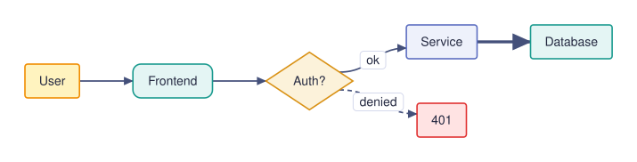
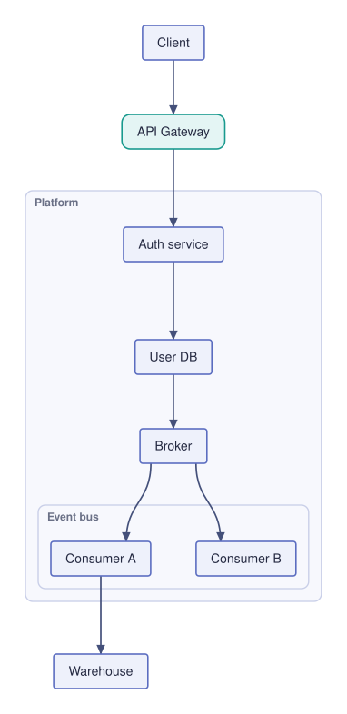
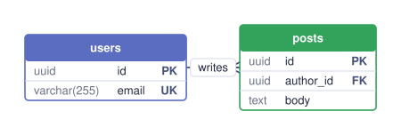

Mermaid-like diagrams. Pure Rust. Zero dependencies.
Mermaid syntax in, SVG out — these examples are the engine's actual output, committed straight from the CLI.
flowchart LR
U[User] --> FE(Frontend) --> API{Auth?}
API -->|ok| SVC[Service]
API -.->|denied| ERR[401]
SVC ==> DB[Database]:::store
classDef store fill:#e4f5f4,stroke:#199a8e
style ERR fill:#ffe3e3,stroke:#e03131
style U fill:#fff3bf,stroke:#f08c00

flowchart TD
Client --> GW(API Gateway) --> Auth
subgraph platform [Platform]
direction LR
Auth[Auth service] --> Users[User DB]
subgraph events [Event bus]
Bus[Broker] --> C1[Consumer A]
Bus --> C2[Consumer B]
end
Users --> Bus
end
C1 --> Store[Warehouse]

erDiagram
users ||--o{ posts : "writes"
users {
uuid id PK
varchar(255) email UK "not null"
}
posts {
uuid id PK
uuid author_id FK
text body
}

The same crate powers everything — every feature lands everywhere at once.
cargo add flowmaid — render_svg(text) for one-shot SVG, or the scene/route API for interactive canvases with live edge re-routing.
Compiles to wasm32 out of the box. The playground ships the whole engine in 936 KB of wasm (376 KB gzipped) — mermaid.js is ~2.5 MB.
flowmaid-desktop: a native editor with live text, draggable nodes, zoom/pan, and real file workflow.
flowmaid diagram.mmd -o out.svg — pipe-friendly, line-numbered errors, sub-millisecond renders on typical diagrams.
flowcli: renders diagrams as Unicode box- and line-drawing in your terminal (ratatui) — no SVG, drawn straight from the scene geometry.
Goal: mermaid.js functionality, pure-Rust edition. Full board with issues in #10 — contributions welcome.
hit_test) → drag (route_partial) → route → persist (to_mermaid)v0.18–0.20A --> B & C, all 6 link typesv0.6<b>/<i> in labelsv0.17; one-liners, entity codesv0.20.1$$math$$ in labels — Phase A passthroughv0.20**bold**, _italic_, newlines, auto-wrapv0.31.0click links & tooltips — sanitised urls, SVG <a>v0.31.0linkStyle — per-edge colour, width, dash and curve, markers follow the strokev0.31.0--x · --o · <--> · x--x, edge ids & animationv0.31.0@{ shape } syntax, accTitle/accDescr, flowchart-elkv0.31.0--transparent backgroundsv0.31.0$$math$$ Phase B — TeX → MathML subset